“…We know only a very few—and, therefore, very precious—schemes whose unifying powers cross many realms.”—Marvin Minsky.1 Categories, or an equivalent notion, have already been introduced as ologs, or equivalently, as database schemas. One can think of a category as a graph (as in Section 4.3) in which certain paths have been declared congruent. (Ologs demand an extra requirement that everything be readable in natural language, and this cannot be part of the mathematical definition of category.) The formal definition of category is given in Definition 5.1.1.1, but it will not appear obvious that it is equivalent to the graph + congruence notion of schema, found in Definition 4.5.2.7. Once we know how different categories can be compared using functors (Definition 5.1.2.1), and how different schemas can be compared using schema mappings (Definition 5.4.1.2), we prove that the two notions are indeed equivalent (Theorem 5.4.2.3). This section gives the standard definition of categories and functors. These, together with natural transformations (Section 5.3), form the backbone of category theory. It also gives several examples. In everyday speech we think of a category as a kind of thing. A category consists of a collection of things, all of which are related in some way. In mathematics a category can also be construed as a collection of things and a type of relationship between pairs of such things. For this kind of thing-relationship duo to count as a category, we need to check two rules, which have the following flavor: every thing must be related to itself by simply being itself, and if one thing is related to another and the second is related to a third, then the first is related to the third. In a category the things are called objects and the relationships are called morphisms. So far we have discussed things of various sorts, e.g., sets, monoids, graphs. In each case we discussed how such things should be appropriately compared as homomorphisms. In each case the things stand as the objects and the appropriate comparisons stand as the morphisms in the category. Here is the definition. Definition 5.1.1.1. A category A. a collection Ob( B. for every pair x, y ∈ C. for every object D. for every three objects called the composition formula. Given objects x, y ∈ Ob( One must then show that the following category laws hold: Remark 5.1.1.2. There is perhaps much that is unfamiliar about Definition 5.1.1.1, but there is also one thing that is strange about it. The objects Ob( A category in which the collection Ob( Example 5.1.1.3 (The category Set of sets). Chapters 2 and 3 were about the category of sets, denoted Set. The objects are the sets and the morphisms are the functions; and the current notation HomSet(X, Y) was used to refer to the set of functions X → Y. The composition formula ○ is given by function composition, and for every set X, the identity function idX: X → X serves as the identity morphism for X ∈ Ob(Set). The two laws clearly hold, so Set is indeed a category. Example 5.1.1.4 (The category Fin of finite sets). Inside the category Set is a subcategory Fin ⊆ Set, called the category of finite sets. Whereas an object S ∈ Ob(Set) is a set that can have arbitrary cardinality, Fin is defined such that Ob(Fin) includes all (and only) those sets S having finitely many elements, i.e., |S| = n for some natural number n ∈ ℕ. Every object of Fin is an object of Set, but not vice versa. Although Fin and Set have different collections of objects, their notions of morphism are in some sense the same. For any two finite sets S, S′ ∈ Ob(Fin), we can also think of S, S′ ∈ Ob(Set), and we have That is, a morphism in Fin between finite sets S and S′ is simply a function f: S → S′. Example 5.1.1.5 (The category Mon of monoids). Monoids were defined in Definition 4.1.1.1, and monoid homomorphisms in Definition 4.1.4.1. Every monoid It is clear that the two category laws (unit and associativity) hold, because monoid morphisms are special kinds of functions, and functions compose unitally and associatively. So Mon is a category. Remark 5.1.1.6. The following will be informal, but it can be formalized. Let’s define a questionable category to be the specification of A, B, C, D from Definition 5.1.1.1, without enforcing either of the category laws (1, 2). Suppose that A. there is a function B. for all C. for all D. for all f: a → b and g: b → c in then This fact was used in Example 5.1.1.5 for Mon ⊆ Set. Exercise 5.1.1.7. Suppose we set out to define a category Grp, having groups as objects and group homomorphisms as morphisms (see Definition 4.2.1.16). Show that the rest of the conditions for Grp to be a category are satisfied. Exercise 5.1.1.8. Suppose we set out to define a category PrO, having preorders as objects and preorder homomorphisms as morphisms (see Definition 4.4.4.1). Show (to the level of detail of Example 5.1.1.5) that the rest of the conditions for PrO to be a category are satisfied. Example 5.1.1.9 (Noncategory 1). What is not a category? Two things can go wrong: either one fails to specify all the relevant constituents (A, B, C, D from Definition 5.1.1.1), or the constituents do not obey the category laws (1, 2). Let G be the following graph: 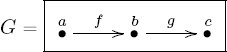 Suppose we try to define a category Following that scheme, we put If we say we are done, the listener should object that we have given neither identities (C) nor a composition formula (D), and these are necessary constituents. Now we are at a loss: it is impossible to give identities under this scheme, because, e.g., Suppose we fix that problem, adding an element to each of the diagonals so that But the listener still demands a composition formula. In particular, we need a function but the domain is nonempty (it is {(f, g)}) and the codomain So again we must make a change, adding an element to make A computer could check this quickly, as can someone with good intuition for categories; for everyone else, it may be a painstaking process involving determining whether there is a unique composition formula for each of the 27 pairs of hom-sets and whether the associative law holds in the 81 necessary cases. Luckily this computation is sparse (lots of ∅’s). If all the morphisms are drawn as arrows, the graph becomes: 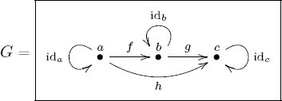 Example 5.1.1.10 (Noncategory 2). In this example, we make a faux category Define To fix this problem we must completely revamp the composition formula. It would work to use multiplication, m ○ n = m * n. Then the identity law would read 1 * m = m = m * 1, and that holds; and the associativity law would read (m * n) * p = m * (n * p), and that holds. Example 5.1.1.11 (The category of preorders with joins). Suppose we are only interested in preorders (X, ⩽) for which every pair of elements has a join. We saw in Exercise 4.4.2.3 that not all preorders have this property. However, we can create a category for the set of objects. What about morphisms? One option would be to put in no morphisms (other than identities) and to just consider this collection of objects as having no structure other than a set. In other words, we can take Another option, say, A third option, say, Slogan 5.1.1.12. If you like joins so much, why don’t you marry them? Morphisms are often billed as preserving all the structure we care about, so it is worth asking whether we want to enforce that constraint on morphisms. That is, suppose f: (X, ⩽X) → (Y, ⩽Y) is a morphism of preorders. We might want to condition the decision of whether to include f as a morphism in One can check easily that the identity morphisms preserve joins and that compositions of join-preserving morphisms are join-preserving, so this version of homomorphisms makes These options are by no means comprehensive, and none of these options is better than any other. Which category to use is decided by whatever fits the situation being modeled. Example 5.1.1.13 (Category FLin of finite linear orders). We have a category PrO of preorders, and some of its objects are finite linear orders. Let FLin be the full subcategory of PrO spanned by the linear orders. That is, following Definition 4.4.4.1, given linear orders X, Y ∈ Ob(FLin), every morphism of preorders X → Y counts as a morphism in FLin: Exercise 5.1.1.14. Let FLin be the category of finite linear orders, defined in Example 5.1.1.13. For n ∈ ℕ, let [n] be the linear order defined in Example 4.4.1.7. What are the cardinalities of the following sets? a. HomFLin([0], [3]) b. HomFLin([3], [0]) c. HomFLin([2], [3]) d. HomFLin([1], [n]) e. (Challenge) HomFLin([m], [n]) It turns out that the category FLin of linear orders is sufficiently rich that much of algebraic topology (the study of arbitrary spaces, such as Mobius strips and seven-dimensional spheres) can be understood in its terms. See Example 6.2.1.7. Example 5.1.1.15 (Category of graphs). Graphs were defined in Definition 4.3.1.1 and graph homomorphisms in Definition 4.3.3.1. To see that these are sufficient to form a category is considered routine to a seasoned category theorist, so let’s see why. Since a morphism from Suppose that 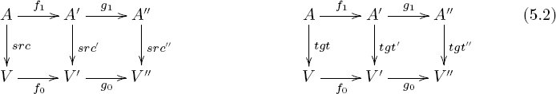 the left-hand square commutes because f is a graph homomorphism and the right-hand square commutes because g is a graph homomorphism. Thus the whole rectangle commutes, meaning that g ○ f is a graph homomorphism, as desired. We denote the category of graphs and graph homomorphisms Grph. Remark 5.1.1.16. When one is struggling to understand basic definitions, notation, and style, a phase that naturally occurs when learning new mathematics (or any new language), the preceding example will probably appear long and tiring. I would say the reader has mastered the basics when the example seems straightforward. Around this time, I hope the reader will get a sense of the remarkable organizational potential of the categorical way of thinking. Exercise 5.1.1.17. Let F be a vector field defined on all of ℝ2. Recall that for two points x, x′ ∈ ℝ2, any curve C with endpoints x and x′, and any parameterization r: [a, b] → C, the line integral ∫C F(r)·dr returns a real number. It does not depend on r, except its orientation (direction). Therefore, if we think of C has having an orientation, say, going from x to x′, then ∫C F is a well defined real number. If C goes from x to x′, let’s write C: x → x′. Define an equivalence relation ∼ on the set of oriented curves in ℝ2 by saying C ∼ C′ if Suppose we try to make a category Is there an identity morphism and a composition formula that will make Solution 5.1.1.17. Yes. For every object x ∈ ℝ2, the constant curve at x serves as the identity on x. If C: x → y and C′: y → z are curves, their composition is given by joining them to get a curve x → z. In any category we have a notion of isomorphism between objects. Definition 5.1.1.19. Let In this case we say that the morphism f is invertible and that g is the inverse of f. We may also say that the objects X and Y are isomorphic. Example 5.1.1.20. If Exercise 5.1.1.21. Let Solution 5.1.1.21. We have a morphism idc: c → c. To show it is an isomorphism we just need to find a morphism f: c → c such that f ○ idc = idc and idc ○ f = idc. Taking f = idc works. Exercise 5.1.1.22. Let Exercise 5.1.1.23. Suppose that G = (V, A, src, tgt) and G′ = (V′, A′, src′, tgt′) are graphs and that f = (f0, f1): G → G′ is a graph homomorphism (as in Definition 4.3.3.1). a. If f is an isomorphism in Grph, does this imply that f0: V → V′ and f1: A → A′ are isomorphisms in Set? b. If so, why; if not, show a counterexample (where f is an isomorphism but either f0 or f1 is not). Exercise 5.1.1.24. Suppose that G = (V, A, src, tgt) and G′ = (V′, A′, src′, tgt′) are graphs and that f = (f0, f1): G → G′ is a graph homomorphism (as in Definition 4.3.3.1). a. If f0: V → V′ and f1: A → A′ are isomorphisms in Set, does this imply that f is an isomorphism in Grph? b. If so, why; if not, show a counterexample (where f0 and f1 are isomorphisms but f is not). Proposition 5.1.1.25. Let Proof. The proof of Proposition 2.1.2.18 can be mimicked in this more general setting. Here is an alternative definition of category, using the work done in Chapter 2. Exercise 5.1.1.27. Suppose we begin our definition of category as follows. A category 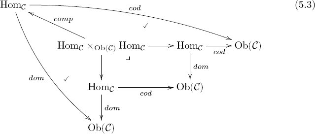 a. Add to diagram (5.3) to express the fact that for any b. Express the condition that composing a morphism f with an appropriate identity morphism yields f. Solution 5.1.1.27. a. This is expressed by the equations: 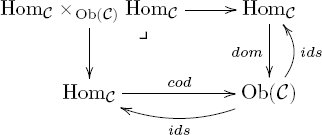 b. We have is induced (see Proposition 3.2.1.15). Similarly there is a function When we compose either of these morphisms with comp, we are taking the composition of a morphism and the identity (either on the domain or the codomain). Thus, the fact that composing any morphism with an identity morphism returns that morphism is expressed by asserting two path equivalences, in the following diagram: 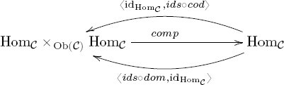 Example 5.1.1.28 (Partial olog for a category). Diagram (5.4) is an olog that captures some of the essential structures of a category: 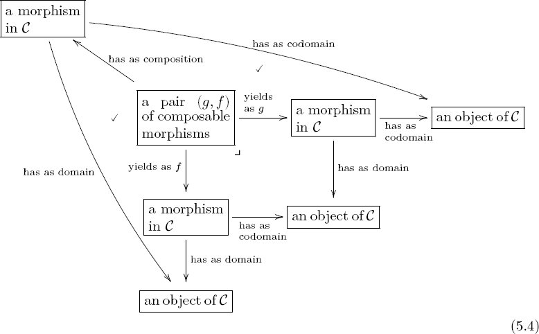 Missing from (5.4) is the notion of identity morphism (as an arrow from ⌜an object of Remark 5.1.1.29. Perhaps it is already clear that category theory is very interconnected. It may feel like everything relates to everything, and this feeling may intensify as you go on. However, the relationships between different notions are rigorously defined, not random. Moreover, almost everything presented in this book can be formalized in a proof system like Coq (the most obvious exceptions being things like the readability requirement of ologs and the modeling of scientific applications). Whenever you feel cognitive vertigo, use the interplay between examples and formal definitions to solidify your understanding. Go through each example, making sure it conforms to the definitions or theorems it purports to exemplify. A category Definition 5.1.2.1. Let A. a function B. for every pair of objects sometimes denoted simply One must then show that the following functor laws hold: Example 5.1.2.2 (Monoids have underlying sets). Recall from Definition 4.1.1.1 that if The on-objects part of U sends every monoid to its underlying set, Given two monoids Example 5.1.2.3 (Groups have underlying monoids). Recall that a group is just a monoid (M, e, ⋆) with the extra property that every element m ∈ M has an inverse m′ ⋆ m = e = m ⋆ m′. Thus to every group we can assign its underlying monoid. Similarly, a group homomorphism is just a monoid homomorphism of its underlying monoids. This means that there is a functor that sends every group or group homomorphism to its underlying monoid or monoid homomorphism. Identity and composition are preserved. Application 5.1.2.4. Suppose you are a scientist working with symmetries. But then suppose that the symmetry breaks somewhere, or you add some extra observable that is not reversible under the symmetry. You want to seamlessly relax the requirement that every action be reversible without changing anything else. You want to know how you can proceed, or what is allowed. The answer is to simply pass from the category of groups (or group actions) to the category of monoids (or monoid actions). We can also reverse this change of perspective. Recall that Example 4.1.2.9 discussed a monoid M controlling the actions of a video game character. The character position (P) could be moved up (u), moved down (d), or moved right (r). The path equivalences P.u.d = P and P.d.u = P imply that these two actions are mutually inverse, whereas moving right has no inverse. This, plus equivalences P.r.u = P.u.r and P.r.d = P.d.r, defined a monoid M. Inside M is a submonoid G, which includes just upward and downward movement. It has one object, just like M, i.e., Ob(M) = {P} = Ob(G). But it has fewer morphisms. In fact, there is a monoid isomorphism G ≅ ℤ because we can assign to any movement in G the number of ups, e.g., P[u, u, u, u, u] is assigned the integer 5, P[d, d, d] is assigned the integer −3, and P[d, u, u, d, d, u] is assigned the integer 0 ∈ ℤ. But ℤ is a group, because every integer has an inverse. The upshot is that we can use functors to compare groups and monoids. Slogan 5.1.2.5. Out of all our available actions, some are reversible. Example 5.1.2.6. Recall that we have a category Set of sets and a category Fin of finite sets. We said that Fin was a subcategory of Set. In fact, we can think of this subcategory relationship in terms of functors, just as we thought of the subset relationship in terms of functions in Example 2.1.2.4. Recall that if we have a subset S ⊆ S′, then every element s ∈ S is an element of S′, so we make a function f: S → S′ such that f(s) = s ∈ S′. To give a functor i: Fin → Set, we have to announce how it works on objects and how it works on morphisms. We begin by announcing a function i: Ob(Fin) → Ob(Set). By analogy with the preceding, we have a subset Ob(Fin) ⊆ Ob(Set). Hence every element s ∈ Ob(Fin) is an element of Ob(Set), so we put i(s) = s. We also have to announce, for each pair of objects s, s′ ∈ Ob(Fin), a function But again, that is easy because we know by definition (see Example 5.1.1.4) that these two sets are equal, HomFin(s, s′) = HomSet(s, s′). Hence we can simply take i to be the identity function on morphisms. It is evident that identities and compositions are preserved by i. Therefore, we have defined a functor i. Remark 5.1.2.7. Recall that any group is just a monoid, except that it has an extra property: every element has an inverse. Thus one can start with a group, “forget” the fact that it is a group and remember only that it is a monoid. Doing this is functorial—Example 5.1.2.3 discussed it as a functor U: Grp → Mon. We say that U is a forgetful functor. There is also a forgetful functor Mon → Set and so Grp → Set. Slogan 5.1.2.8. You can use a smartphone as a paperweight. Colloquially, people often say things like, “Carol wears many hats” to mean that Carol acts in different roles, even though substantively she is somehow the same. The hat Carol currently wears is the analogous to the category, or context of interaction, that she is currently in. Exercise 5.1.2.9. A partial order is just a preorder with a special property. A linear order is just a partial order with a special property. a. Is there a useful functor FLin → PrO? b. Is there a useful functor PrO → FLin? Proposition 5.1.2.10 (Preorders to graphs). Let PrO be the category of preorders and Grph be the category of graphs. There is a functor P: PrO → Grph such that for any preorder Proof. Given a preorder Then we put Suppose now that 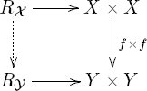 (Note that there cannot be two different dotted arrows making that diagram commute because Exercise 5.1.2.11. Proposition 5.1.2.10 gave a functor P: PrO → Grph. a. Is every graph G ∈ Ob(Grph) in the image of P (or more precisely, is the function surjective)? b. If so, why; if not, name a graph not in the image. c. Suppose that G′ and H′ are preorders with graph formats P(G′) = G and P(H′) = H. Is every graph homomorphism f: G → H in the image of In other words, does every graph homomorphism between G and H come from a preorder homomorphism between G′ and H′? Remark 5.1.2.12. There is a functor W: PrO → Set sending (X, ⩽) to X. There is a functor T: Grph → Set sending (V, A, src, tgt) to V. When we study the category of categories (see Section 5.1.2.30), it will be clear that Proposition 5.1.2.10 can be summarized as a commutative triangle in Cat, 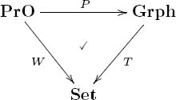 Exercise 5.1.2.13. Recall from (2.3) that every function f: A → B has an image, imf(A) ⊆ B. Use this idea and Example 4.4.1.16 to construct a functor Im: Grph → PrO such that for any graph G = (V, A, src, tgt), the vertices of G are the elements of Im(G). That is, find some ordering ⩽G, such that we have Im(G) = (V, ⩽G). Solution 5.1.2.13. Suppose given an object G ∈ Ob(Grph), i.e., a graph G = (V, A, src, tgt). The source and target functions combine to give a function 〈src, tgt〉: A → V × V. Its image is a subset R ⊆ V × V, i.e., a binary relation. But R is not necessarily a preorder. We can remedy that by using the preorder Given a morphism f: G → G′, we need to provide a preorder morphism Im(G) → Im(G′). The obvious choice is to use f0 (what f does on vertices), but we need to check that it preserves the order. This is clear because graph morphisms send paths to paths—if there was a path from v to v′ in G, there will be one from f(v) to f(v′). We need to check that Im(idG) = idIm(G), but this is straightforward. Exercise 5.1.2.14. In Exercise 5.1.2.13 you constructed a functor Im: Grph → PrO. What is the preorder Im(G) when G ∈ Ob(Grph) is the following graph? 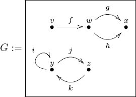 Exercise 5.1.2.15. Consider the functor Im: Grph → PrO constructed in Exercise 5.1.2.13. a. Is every preorder b. If so, why; if not, name a preorder not in the image. c. Suppose that In other words, does every preorder homomorphism between Exercise 5.1.2.16. We have functors P: PrO → Grph and Im: Grph → PrO. a. What can you say about Im ○ P: PrO → PrO? b. What can you say about P ○ Im: Grph → Grph? Exercise 5.1.2.17. Consider the functors P: PrO → Grph and Im: Grph → PrO. And consider the chain graph [n] of length n from Example 4.3.1.8 and the linear order [n] of length n from Example 4.4.1.7. To differentiate the two, let’s rename them for this exercise as [n]Grph ∈ Ob(Grph) and [n]PrO ∈ Ob(PrO). We see a similarity between [n]Grph and [n]PrO, and we might hope that the functors help formalize this similarity. That is, we might hope that one of the following hold: Do either, both, or neither of these hold? Remark 5.1.2.18. In the course announcement for MIT’s 18-S996 course, I wrote the following: It is often useful to focus one’s study by viewing an individual thing, or a group of things, as though it exists in isolation. However, the ability to rigorously change our point of view, seeing our object of study in a different context, often yields unexpected insights. Moreover, this ability to change perspective is indispensable for effectively communicating with and learning from others. It is the relationships between things, rather than the things in and by themselves, that are responsible for generating the rich variety of phenomena we observe in the physical, informational, and mathematical worlds. This holds at many different levels. For example, one can study a group (in the sense of Definition 4.2.1.1) in isolation, trying to understand its subgroups or its automorphisms, and this is mathematically interesting. But one can also view it as a quotient of something else, or as a subgroup of something else. One can view the group as a monoid and look at monoid homomorphisms to or from it. One can look at the group in the context of symmetries by seeing how it acts on sets. These changes of viewpoint are all clearly and formally expressible within category theory. We know how the different changes of viewpoint compose and how they fit together in a larger context. Exercise 5.1.2.19. a. Is the preceding quotation also true in your scientific discipline of expertise? How so? b. Can you imagine a way that category theory can help catalogue the kinds of relationships or changes of viewpoint that exist in your discipline? c. What kinds of structures that you use often deserve to be better formalized? Example 5.1.2.20 (Free monoids). Let G be a set. Definition 4.1.1.15 defined a monoid List(G), called the free monoid on G. Given a function f: G → G′, there is an induced function List(f): List(G) → List(G′), and this preserves the identity element [ ] and concatenation of lists, so List(f) is a monoid homomorphism. It is easy to check that List: Set → Mon is a functor. Application 5.1.2.21. Application 2.1.2.16 discussed an isomorphism NucDNA ≅ NucRNA given by RNA transcription. Applying the functor List, we get a function which will send sequences of DNA nucleotides to sequences of RNA nucleotides, and vice versa. This is performed by polymerases. Exercise 5.1.2.22. Let G = {1, 2, 3, 4, 5}, G′ = {a, b, c}, and let f: G → G′ be given by the sequence (a, c, b, a, c).5 Then if L = [1, 1, 3, 5, 4, 5, 3, 2, 4, 1], what is List(f)(L)? Solution 5.1.2.22. Use f to translate L, entry by entry: Remark 5.1.2.23 (Questionable functor). Recall from Remark 5.1.1.6 that a questionable category is defined to be a structure that looks like a category (objects, morphisms, identities, composition formula), but which is not required to satisfy any laws. Similarly, given categories (or questionable categories) A. a function B. for every pair of objects c, d ∈ Ob( sometimes denoted simply Exercise 5.1.2.24. We can rephrase the notion of functor in terms compatible with Exercise 5.1.1.27. We begin by saying that a functor called the on-objects part and the on-morphisms part respectively. They must follow some rules, expressed by the commutativity of the following squares in Set: 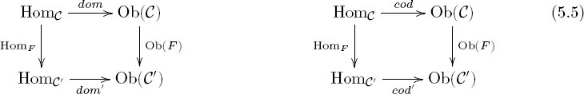 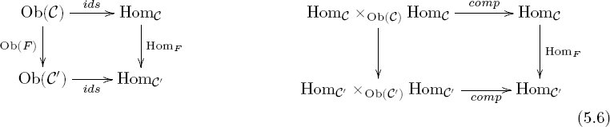 a. In the right-hand diagram in (5.6), where does the (unlabeled) left-hand function come from? Hint: Use Exercise 3.2.1.20. Consider diagram (5.3); imagine it as though it were contained in a pane of glass. Then imagine a parallel pane of glass involving b. Draw arrows from the c. If F is a functor, i.e., it satisfies (5.5) and (5.6), do all the squares in your drawing commute? d. Does the definition of functor involve anything not captured in this setup? Solution 5.1.2.24. a. We have HomF: HomC → HomC′, and since it commutes with dom and cod, we have the desired function, by Exercise 3.2.1.20. b. Let 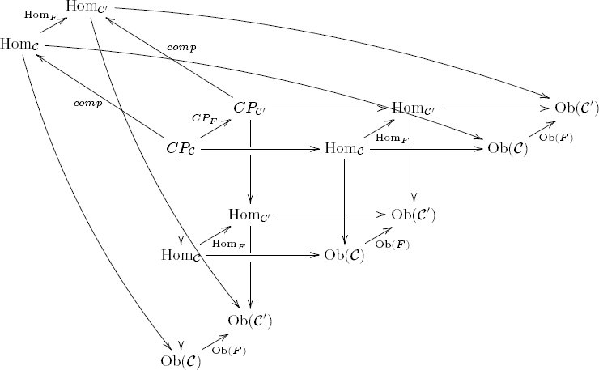 c. Yes. d. No, this is all one needs: functions Example 5.1.2.25 (Paths-graph). Let G = (V, A, src, tgt) be a graph. We have a set PathG of paths in G, and functions Moreover, given a graph homomorphism f: G → G′, every path in G is sent under f to a path in G′. So Paths: Grph → Grph is a functor. Exercise 5.1.2.26. a. Consider the graph G from Example 4.3.3.3. Draw the paths-graph Paths(G) for G. b. Repeating part (a) for G′ from the same example would be hard, because the paths-graph Paths(G′) has infinitely many arrows. However, the graph homomorphism f: G → G′ does induce a morphism of paths-graphs Paths(f): Paths(G) → Paths(G′). How does that act on the vertices and arrows of Paths(G)? c. Given a graph homomorphism f: G → G′ and two paths p: v → w and q: w → x in G, is it true that Paths(f) preserves the concatenation? Explain also what it means to say Paths(f) preserves the concatenation. Solution 5.1.2.26. a. Here are G and Paths(G). 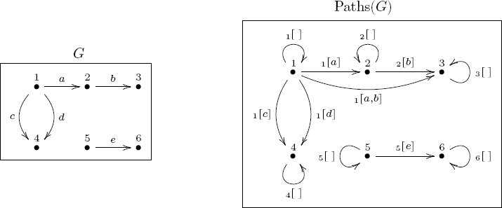 b. For the reader’s convenience, here is a copy of f: G → G′: 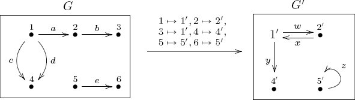 By definition Paths(f) acts like f on the vertices, and arrow by arrow on paths. Here is the formal answer: 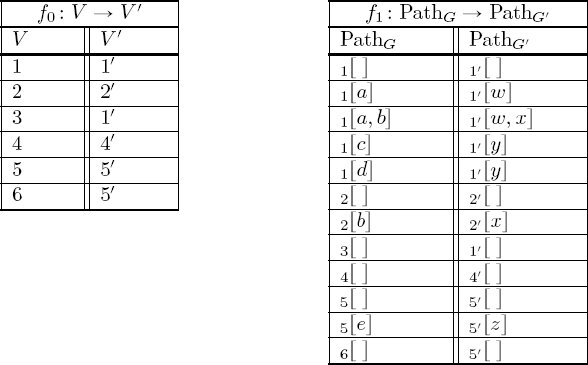 c. Yes, that is true. It means that f(p) ++f(q) = f(p ++q), where ++ denotes concatenation of paths. Exercise 5.1.2.27. Suppose that Solution 5.1.2.27. If c and c′ are isomorphic, that means there exists a morphism f: c → c′ and a morphism f′: c′ → c in Example 5.1.2.28. For any graph G, we can assign its set of length 1 loops Eq(G) as in Exercise 4.3.1.12. This assignment is functorial in that given a graph homomorphism G → G′, there is an induced function Eq(G) → Eq(G′). Similarly, we can functorially assign the set of connected components of the graph, Coeq(G). In other words, Eq: Grph → Set and Coeq: Grph → Set are functors. The assignment of vertex set and arrow set are two more functors Grph → Set. Suppose you want to decide whether two graphs G and G′ are isomorphic. If the graphs have thousands of vertices and thousands of arrows, this could take a long time. However, the preceding functors, in combination with Exercise 5.1.2.27 give us some things to try. The first thing to do is to count the number of loops of each, because these numbers are generally small. If the number of loops in G is different than the number of loops in G′, then because functors preserve isomorphisms, G and G′ cannot be isomorphic. Similarly, one can count the number of connected components, again generally a small number. If the number of components in G is different than the number of components in G′, then G ≇ G′. Similarly, one can simply count the number of vertices or the number of arrows in G and G′. These are all isomorphism invariants. All this is a bit like trying to decide if a number is prime by checking if it is even, if its digits add up to a multiple of 3, or if it ends in a 5; these tests do not determine the answer, but they offer some level of discernment. Remark 5.1.2.29. As mentioned, functors allow ideas in one domain to be rigorously imported to another. Example 5.1.2.28 is a first taste. Because functors preserve isomorphisms, we can tell graphs apart by looking at them in a simpler category, Set, using various lenses (in that case, four). There is relatively simple theorem in Set that says that for different natural numbers m, n the sets m and n are never isomorphic. This theorem is transported via the four functors to four different theorems about telling graphs apart. Recall from Remark 5.1.1.2 that a small category Proposition 5.1.2.31. There exists a category, called the category of small categories and denoted Cat, in which the objects are the small categories and the morphisms are the functors, That is, there are identity functors, functors can be composed, and the identity and associativity laws hold. Proof. We follow Definition 5.1.1.1. We have already specified Ob(Cat) and HomCat in the statement of the proposition. Given a small category Example 5.1.2.32 (Categories have underlying graphs). Suppose given a category in the notation is as in Exercise 5.1.1.27, Example 5.1.2.33 (Free category on a graph). Example 5.1.2.25 discussed a functor Paths: Grph → Grph that considered all the paths in a graph G as the arrows of a new graph Paths(G). In fact, Paths(G) could be construed as a category, denoted F(G) ∈ Ob(Cat) and called the free category generated by G. The objects of the category F(G) are the vertices of G. For any two vertices v, v′, the hom-set HomF(G)(v, v′) is the set of paths in G from v to v′. The identity elements are given by the trivial paths, and the composition formula is given by concatenation of paths. For the on-morphisms part of F, we need to see that a graph homomorphism f: G → G′ induces a functor F(f): F(G) → F(G′). But this was shown in Exercise 5.1.2.26. Thus we have a functor called the free category functor. Exercise 5.1.2.34. Let G be the graph depicted 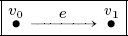 and let [1] ∈ Ob(Cat) denote the free category on G, i.e., [1] ≔ F(G), as in Example 5.1.2.33. We call [1] the free arrow category. a. What are the objects of [1]? b. For every pair of objects in [1], write the hom-set. Solution 5.1.2.34. a. Ob([1]) = {v0, v1}. b. There are four pairs of objects, so the four hom-sets are: Exercise 5.1.2.35. Let G be the graph whose vertices are all U.S. cities and whose arrows are airplane flights connecting the cities. What idea is captured by the free category on G? Exercise 5.1.2.36. Let F: Grph → Cat denote the free category functor from Example 5.1.2.33, and let U: Cat → Grph denote the underlying graph functor from Example 5.1.2.32. What is the composition U ○ F: Grph → Grph called? Solution 5.1.2.36. Since F: Grph → Cat freely adds all paths, one can check that U○F: Grph → Grph is the construction that takes a graph and adds all paths; i.e., U ○ F = Paths (see Example 5.1.2.25). Exercise 5.1.2.37. Recall the graph G from Example 4.3.1.2. Let a. What is b. What is Example 5.1.2.38 (Discrete graphs, discrete categories). There is a functor Disc: Set → Grph that sends a set S to the graph where !: ∅ → S is the unique function. We call Disc(S) the discrete graph on the set S. It is clear that a function S → S′ induces a morphism of discrete graphs. Now applying the free category functor F: Grph → Cat, we get the discrete category on the set S. This composition is also denoted Disc: Set → Cat. Exercise 5.1.2.39. Recall from (2.4) the definition of the set n for any natural number n ∈ ℕ, and let Dn ≔ Disc(n) ∈ Ob(Cat) be the discrete category on the set n, as in Example 5.1.2.38. a. List all the morphisms in D4. b. List all the functors D3 → D2. Exercise 5.1.2.40. Let Solution 5.1.2.40. There is always one functor We sometimes refer to Disc(1) as the terminal category (see Section 6.1.3) and for simplicity denote it 1. Its unique object is denoted 1. Exercise 5.1.2.41. If someone said, “Ob is a functor from Cat to Set,” what might they mean? Solution 5.1.2.41. They probably mean that there is a functor Cat → Set that sends a category Exercise 5.1.2.42. If someone said, “Hom is a functor from Cat to Set, where by Hom I mean the mapping that takes Solution 5.1.2.42. They probably mean that there is a functor Cat → Set that sends a category We saw in Section 5.1.1 that there is a category Mon of monoids, a category Grp of groups, a category PrO of preorders, and a category Grph of graphs. This section shows that each monoid Example 4.1.2.9 said that to olog a monoid, one should use only one box. And again Example 4.5.3.3 said that a monoid action could be captured by only one table. These ideas are encapsulated by the understanding that a monoid is perfectly modeled as a category with one object. Each monoid as a category with one object Let (M, e, ⋆) be a monoid. We consider it as a category The identity morphism id▲ serves as the monoid identity e, and the composition formula is given by ⋆: M × M → M. The associativity and identity laws for the monoid match precisely with the associativity and identity laws for categories. If a monoid is a category with one object, is there any categorical way of phrasing the notion of monoid homomorphism? Suppose that Each monoid homomorphism as a functor between one-object categories Say that Ob( Slogan 5.2.1.2. A monoid is a category with one object. A monoid homomorphism is just a functor between one-object categories. This is formalized in the following theorem. Theorem 5.2.1.3. There is a functor i : Mon → Cat with the following properties: induced by the functor i, is a bijection. Proof. This is basically the content of the preceding paragraphs. The functor i sends a monoid to the corresponding category with one object and i sends a monoid homomorphism to the corresponding functor. One can check that i preserves identities and compositions. Theorem 5.2.1.3 situates the theory of monoids very nicely within the world of categories. But we have other ways of thinking about monoids, namely, their actions on sets. It would greatly strengthen the story if we could subsume monoid actions within category theory also, and we can. Each monoid action as a set-valued functor Recall from Definition 4.1.2.1 that if (M, e, ⋆) is a monoid, an action consists of a set S and a function 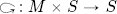 such that The monoid-as-category By currying (see Proposition 3.4.2.3), this is the same as a function 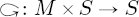. The first monoid action law, that 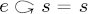, becomes the law that functors preserve identities, HomF (id▲) = idS. The other monoid action law is equivalent to the composition law for functors. A group is just a monoid (M, e, ⋆) in which every element m ∈ M is invertible, meaning there exists some m′ ∈ M with m ⋆ m′ = e = m′ ⋆ m. If a monoid is the same thing as a category Slogan 5.2.1.5. A group is a category Theorem 5.2.1.6. There is a functor i : Grp → Cat with the following properties: induced by the functor i, is a bijection. Just as with monoids, an action of some group (G, e, ⋆) on a set S ∈ Ob(Set) is the same thing as a functor If a monoid is just a category with one object, we can locate monoids in any category Example 5.2.1.8 (Endomorphism monoid). Let Example 5.2.1.9 (Automorphism group). Let Exercise 5.2.1.10. Let S = {1, 2, 3, 4} ∈ Ob(Set). a. What is the automorphism group Aut(S) of S in Set, and how many elements does this group have? b. What is the endomorphism monoid End(S) of S in Set, and how many elements does this monoid have? c. Recall from Example 5.1.2.3 that every group has an underlying monoid U(G). Is the endomorphism monoid of S the underlying monoid of the automorphism group of S? That is, is it the case that End(S) = U(Aut(S))? Exercise 5.2.1.11. Consider the following graph G, which has four vertices and eight arrows: 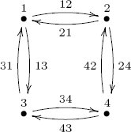 What is the automorphism group Aut(G) of G ∈ Ob(Grph) Hint: Every automorphism of G will induce an automorphism of the set {1, 2, 3, 4}; which ones will preserve the endpoints of arrows? Solution 5.2.1.11. We use visual perception to guide us. The graph G has the shape of a square. Of the 4! different possible automorphisms of {1, 2, 3, 4}, only those preserving the square shape will be automorphisms of G. The group of automorphisms of G is called the dihedral group of order 8 (see Example 4.2.1.4). It has eight elements, where r means rotate the square clockwise 90°, and f means flip the square horizontally. For example, flipping the square vertically can be obtained by flipping horizontally and then rotating twice: fr2. A preorder (X, ⩽) consists of a set X and a binary relation ⩽ that is reflexive and transitive. We can make from (X, ⩽) ∈ Ob(PrO) a category To clarify: if x ⩽ y, we assign is completely determined because either one of two possibilities occurs. One possibility is that the left-hand side is empty (if either x ≰ y or y ≰ z; in this case there is a unique function ○ as in (5.7)). The other possibility is that the left-hand side is not empty in case x ⩽ y and y ⩽ z, which implies x ⩽ z, so the right-hand side has exactly one element “x ⩽ z” in which case again there is a unique function ○ as in (5.7). On the other hand, if Proposition 5.2.1.13. There is a functor i: PrO → Cat with the following properties for every preorder (X, ⩽): Moreover, any category with property 2 is in the image of the functor i. Proof. To specify a functor i : PrO → Cat, we need to say what it does on objects and on morphisms. To an object (X, ⩽) in PrO, we assign the category Slogan 5.2.1.14. A preorder is a category in which every hom-set has either 0 elements or 1 element. A preorder morphism is just a functor between such categories. Exercise 5.2.1.15. Suppose that Exercise 5.2.1.16. Proposition 5.2.1.13 stated that a preorder can be considered as a category Example 5.2.1.17. The olog from Example 4.4.1.3 depicted a partial order, call it and Both of these sets contain exactly one element; the name is not important. The set Exercise 5.2.1.18. Every linear order is a preorder with a special property. Using the categorical interpretation of preorders, can you phrase the property of being a linear order in terms of hom-sets? Exercise 5.2.1.19. Recall the functor P : PrO → Grph from Proposition 5.1.2.10, the functors F : Grph → Cat and U : Cat → Grph from Example 5.1.2.36, and the functor i: PrO → Cat from Proposition 5.2.1.13. a. Do either of the following diagrams of categories commute? 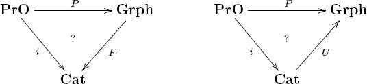 b. We also gave a functor Im: Grph → PrO in Exercise 5.1.2.13. Does the following diagram of categories commute? 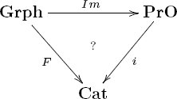 Proposition 5.2.1.20. There is a unique functor R: Cat → PrO with the following properties: Furthermore, if i: PrO → Cat is the inclusion from Proposition 5.2.1.13, we have R ○ i = idPrO. Proof. Given a category Let 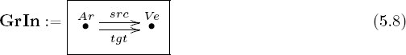 Then a functor G : GrIn → Set is the same thing as two sets G(Ar), G(Ve) and two functions G(src) : G(Ar) → G(Ve) and G(tgt) : G(Ar) → G(Ve). This is precisely what is needed for a graph; see Definition 4.3.1.1. We call GrIn the graph-indexing category. Exercise 5.2.1.22. Consider the terminal category, 1, also known as the discrete category on one element (see Exercise 5.1.2.40). Let GrIn be as in (5.8) and consider the functor i0 : 1 → GrIn sending the unique object of 1 to the object V e ∈ Ob(GrIn). a. If G : GrIn → Set is a graph, what is the composite G ○ i0? It consists of only one set; in terms of the graph G, what set is it? b. As an example, what set is it when G is the graph from Example 4.3.3.3? If a graph is a functor GrIn → Set, what is a graph homomorphism? Example 5.3.1.20 shows that graph homomorphisms are homomorphisms between functors, which are called natural transformations. (Natural transformations are the highest-level structure in ordinary category theory.) Example 5.2.1.23. Let SGrIn be the category depicted as follows: with the following composition formula: The idea here is that the morphism ρ: A → A reverses arrows. The PED A[ρ, ρ] = A[ ] forces the fact that the reverse of the reverse of an arrow yields the original arrow. The PEDs A[ρ, src] = A[tgt] and A[ρ, tgt] = A[src] force the fact that when we reverse an arrow, its source and target switch roles. This category SGrIn is the symmetric graph-indexing category. Just as any graph can be understood as a functor GrIn → Set, where GrIn is the graph-indexing category displayed in (5.8), any symmetric graph can be understood as a functor SGrIn → Set, where SGrIn is the category drawn in (5.9). Given a functor G : SGrIn → Set, we will have a set of arrows, a set of vertices, a source operation, a target operation, and a reverse-direction operation (ρ) that all behave as expected. It is customary to draw the connections in a symmetric graph G as line segments rather than arrows between vertices. However, a better heuristic is to think that each connection between vertices in G consists of two arrows, one pointing in each direction. Slogan 5.2.1.24. In a symmetric graph, every arrow has an equal and opposite arrow. Exercise 5.2.1.25. Which of the following graphs are symmetric: a. The graph G from (4.3)? b. The graph G from Exercise 4.3.1.10? c. The graph G′ from (4.6)? d. The graph e. The graph G from Exercise 5.2.1.11? Exercise 5.2.1.26. Let GrIn be the graph-indexing category shown in (5.8), and let SGrIn be the symmetric graph-indexing category displayed in (5.9). a. How many functors are there of the form GrIn → SGrIn? b. Is one more reasonable than the others? If so, call it i : GrIn → SGrIn, and write how it acts on objects and morphisms. c. Choose a functor i : GrIn → SGrIn, the most reasonable one, if such a thing exists. seems most reasonable and call it i : GrIn → SGrIn. If a symmetric graph is a functor S : SGrIn → Set, you can compose with i to get a functor S ○ i : GrIn → Set. This is a graph; what graph is it? What has changed? Example 5.2.1.27. Let Recall from Definition 4.5.2.7 that a database schema (or schema, for short) consists of a graph together with a certain kind of equivalence relation, namely a congruence, on its paths. Section 5.4.1 defines a category Sch that has schemas as objects and appropriately modified graph homomorphisms as morphisms. Section 5.4.2 proves that the category of schemas is equivalent (in the sense of Definition 5.3.4.1) to the category of categories, The difference between schemas and categories is like the difference between monoid presentations, given by generators and relations as in Definition 4.1.1.19, and the monoids themselves. The same monoid has (infinitely) many different presentations, and so it is for categories: many different schemas can present the same category. Computer scientists may think of the schema as syntax and the category it presents as the corresponding semantics. A schema is a compact form and can be specified in finite space and time, whereas the category it generates can be infinite. Slogan 5.2.2.1. A database schema is a category presentation. Section 5.4.2 formally shows how to turn a schema into a category (the category it presents). For now, it seems better not to be so formal, because the idea is fairly straightforward. Suppose given a schema Example 5.2.2.2. The following schema The category it generates, however, is the free monoid on one generator, ℕ. It has one object s, but a morphism fn : s → s for every natural number n ∈ ℕ, thought of as “how many times to go around the loop f.” Clearly, the schema is more compact than the infinite category it generates. Exercise 5.2.2.3. Consider the olog from Exercise 4.5.2.19, which says that for any father x, his youngest child’s father is x and his tallest child’s father is x. It is redrawn here as a schema 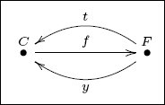 How many morphisms are there (total) in the category presented by Solution 5.2.2.3. There are seven. Let Given a child, the three morphisms C → C respectively return the child herself, her tallest sibling (technically, her father’s tallest child), and her youngest sibling (technically, her father’s youngest child). Exercise 5.2.2.4. Suppose that G is a graph and that Exercise 5.2.2.5. Let a. Express the condition of being a leaf table mathematically in three different languages: that of graphs (using symbols V, A, src, tgt), that of categories (using b. In the language of categories, is there a difference between a terminal object and a leaf table? Explain. If schemas are like categories, what are instances? Recall that an instance I on a schema Example 5.2.2.7. We have seen that a monoid is just a category Exercise 5.2.2.8. Section 5.2.1.21 discussed how each graph is a functor GrIn → Set for the graph-indexing category depicted here: 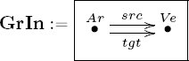 But now we know that if a graph is a set-valued functor, then we can consider GrIn as a database schema. a. How many tables, and how many foreign key columns of each should there be (if unsure, consult Rules 4.5.2.9)? b. Write the table view of graph G from Example 4.3.3.3. Category theory was invented for use in algebraic topology, and in particular, to discuss natural transformations between certain functors. Section 5.3 discusses natural transformations more formally. It suffices now to say a natural transformation is some kind of morphism between functors. In the original use, Eilenberg and Mac Lane were interested in functors that connect topological spaces (e.g., shapes such as spheres) to algebraic systems (e.g., groups). For example, there is a functor that assigns to each space X its group π1(X) of round-trip voyages (starting and ending at some chosen point x ∈ X), modulo some equivalence relation. There is another functor that assigns to every space its group Hℤ1(X) of ways to drop some (positive or negative) number of circles on X. These two functors, π1 and Hℤ1 are related, but they are not equal. For example, when X is the figure-8 space (two circles joined at a point) the group π1(X) is much bigger than the group Hℤ1(X). Indeed, π1(X) includes information about the order and direction of loops traveled during the voyage, whereas the group Hℤ1(X) includes only information about how many times one goes around each loop. However, there is a natural transformation of functors π1 → Hℤ1, called the Hurewicz transformation, which takes π1’s voyage, counts how many times it went around each loop, and delivers that information to Hℤ1. Example 5.2.3.1. Given a set X, recall that ℙ(X) denotes the preorder of subsets of X. A topology on X is a choice of which subsets U ∈ ℙ(X) will be called open sets. To be a topology, these open sets must follow two rules. Namely, the union of any number of open sets must be considered to be an open set, and the intersection of any finite number of open sets must be considered open. One could say succinctly that a topology on X is a suborder Open(X) ⊆ ℙ(X) that is closed under taking finite meets and infinite joins. A topological space is a pair (X, Open(X)), where X is a set and Open(X) is a topology on X. The elements of the set X are called points. A morphism of topological spaces (also called a continuous map) is a function f : X → Y such that for every V ∈ Open(Y), the preimage f−1(V) ∈ ℙ(X) is actually in Open(X), that is, such that there exists a dashed arrow making the following diagram commute: 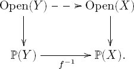 The category of topological spaces, denoted Top, is the category having the preceding objects and morphisms. Exercise 5.2.3.2. a. Explain how looking at points gives a functor Top → Set. b. Does looking at open sets give a functor Top → PrO? Solution 5.2.3.2. a. A topological space (X, Open(X)) includes a set X ∈ Ob(Set) of points. A morphism (X, Open(X)) → (Y, Open(Y)) of spaces includes a function X → Y . Thus we have a functor Top → Set, because the identity morphisms and compositions of morphisms in Top are sent to their counterparts in Set. b. No. A morphism (X, Open(X)) → (Y, Open(Y)) includes a preorder morphism in the direction Open(Y) → Open(X), not the other way around. Definition 6.2.1.1 shows that every category Example 5.2.3.3 (Continuous dynamical systems). The set ℝ can be given a topology in a standard way.7 But (ℝ, 0, +) is also a monoid. Moreover, for every x ∈ ℝ, the monoid operation + : ℝ × ℝ → ℝ is continuous.8 So we say that Recall from Section 5.2.1.1 that an action of Example 5.2.3.4. Recall (see Axler [3]) that a real vector space is a set X, elements of which are called vectors, which is closed under addition and scalar multiplication. For example, ℝ3 is a vector space. A linear transformation f from X to Y is a function f : X → Y that appropriately preserves addition and scalar multiplication. The category of real vector spaces, denoted Vectℝ, has as objects the real vector spaces and as morphisms the linear transformations. There is a functor Vectℝ → Grp sending a vector space to its underlying group of vectors, where the group operation is addition of vectors and the group identity is the 0-vector. Exercise 5.2.3.5. Every vector space has vector subspaces, ordered by inclusion (the origin is inside of any line that is inside of certain planes, and all are inside of the whole space V). If you know about this topic, answer the following questions. a. Does a linear transformation V → V′ induce a morphism of these orders? In other words, is there a functor subspaces: Vectℝ → PrO? b. Would you guess that there is a nice functor Vectℝ → Top? By “nice functor” I mean a substantive one. For example, there is a functor Vectℝ → Top that sends every vector space to the empty topological space; if someone asked for a functor Vectℝ → Top for their birthday, this functor would make them sad. Give a functor Vectℝ → Top that would make them happy. There is a functor | · |: Vectℝ → Set sending every vector space X to its set |X| of vectors. A categorically nice way to understand this functor is as Exercise 5.2.3.6. Suppose we think of Vectℝ as a database schema, and we think of | · |: Vectℝ → Set as an instance (see Section 4.5). Of course, the schema and the instance are both infinite, but let’s not worry about that. a. Pick two objects x, y and two morphisms f, g : x → y from Vectℝ, actual vector spaces and linear transformations, and call this your subschema. Draw it as dots and arrows. b. Write four rows in each table of the instance | · | on your subschema. Groupoids are like groups except a groupoid can have more than one object. Definition 5.2.3.8. A groupoid is a category Example 5.2.3.9. There is a functor Grpd → Cat, sending a groupoid to its underlying category. There is also a functor Grp → Grpd sending a group to itself as a groupoid with one object. There is also a functor Core: Cat → Grpd, sending a category Application 5.2.3.10. Let M be a material in some original state s0.9 Construct a category The elastic deformation region of the material is the set of states s such that there exists an inverse s → s0 to the morphism is. A transformation is irreversible if its representing morphism has no inverse. If a state s1 is not in the elastic deformation region, we can still talk about the region that is (inventing a term) elastically equivalent to s1. It is all the objects in Example 5.2.3.11. Alan Weinstein [45] explains groupoids in terms of tiling patterns on a bathroom floor. This is worth reading. Example 5.2.3.12. Let I = {x ∈ ℝ | 0 ⩽ x ⩽ 1} denote the unit interval. It can be given a topology in a standard way, as a subset of ℝ (see Example 5.2.3.3). For any topological space X, a path in X is a continuous map I → X. Two paths are called homotopic if one can be continuously deformed to the other, where the deformation occurs completely within X.10 One can prove that being homotopic is an equivalence relation on paths. Paths in X can be composed, one after the other, and the composition is associative (up to homotopy). Moreover, for any point x ∈ X, there is a trivial path (that stays at x). Finally every path is invertible (by traversing it backward) up to homotopy. This all means that to any space X ∈ Ob(Top) we can associate a groupoid, called the fundamental groupoid of X and denoted Π1(X) ∈ Ob(Grpd). The objects of Π1(X) are the points of X; the morphisms in Π1(X) are the paths in X (up to homotopy). A continuous map f : X → Y can be composed with any path I → X to give a path I → Y, and this preserves homotopy. So, in fact, Π1 : Top → Grpd is a functor. Exercise 5.2.3.13. Let T denote the surface of a doughnut, i.e., a torus. Choose two points p, q ∈ T. Since Π1(T) is a groupoid, it is also a category. What would the hom-set Exercise 5.2.3.14. Let U ⊆ ℝ2 be an open subset of the plane, and let F be an irrotational vector field on U (i.e., one with curl(F) = 0). Following Exercise 5.1.1.17, we have a category We also have a category Π1U, given by the fundamental groupoid, as in Example 5.2.3.12. Both categories have the same objects, a. Is there a functor b. Let c. If F is a conservative vector field, what is d. If F is a conservative vector field, how does Exercise 5.2.3.15. Consider the set A of all (well-formed) arithmetic expressions that can be written with the symbols For example, here are four different elements of A : We can say that an equivalence between two arithmetic expressions is a justification that they give the same final answer, e.g., 52 + 60 is equivalent to 10 * (5 + 6) + (2 + 0), which is equivalent to 10 * 11 + 2. a. I have basically described a category G. What are its objects, and what are its morphisms? b. Is G a groupoid? Given a domain of discourse, a logical proposition is a statement that is evaluated in any model of that domain as either true or not always true, which the black-and-white thinker might dub “false.” For example, in the domain of real numbers we might have the proposition For any real number x ∈ ℝ, there exists a real number y ∈ ℝ such that y > 3x. That is true: for x = 22, we can offer y = 100. But the following proposition is not true: Every integer x ∈ ℤ is divisible by 2 or 3. It is true for the majority of integers, but not for all integers; thus it is dubbed false. We say that one logical proposition P implies another proposition Q, denoted P ⇒ Q, if for every model in which P is true, so is Q. There is a category Prop whose objects are logical propositions and whose morphisms are proofs that one statement implies another. Crudely, one might say that B holds at least as often as A if there is a morphism A → B (meaning in any model for which A holds, so does B). So the proposition “x ≠ x” holds very seldom, and the proposition “x = x” holds very often. Example 5.2.4.2. We can repeat this idea for nonmathematical statements. Take the set of all possible statements that are verifiable by experiment as the objects of a category. Given two such statements, it may be that one implies the other (e.g., “If the speed of light is fixed, then there are relativistic effects”). Every statement implies itself (identity) and implication is transitive, so we have a category. Let’s consider differences in proofs to be irrelevant, in which case the category Prop is simply a preorder (Prop, ⇒): either A implies B or it does not. Then it makes sense to discuss meets and joins. It turns out that meets are “and’s,” and joins are “or’s.” That is, given propositions A, B, the meet A ∧ B is defined to be a proposition that holds as often as possible subject to the constraint that it implies both A and B; the proposition “A holds and B holds” fits the bill. Similarly, the join A ∨ B is given by “A holds or B holds.” Exercise 5.2.4.3. Consider the set of possible laws (most likely an infinite set) that can be dictated to hold throughout a jurisdiction. Consider each law as a proposition (“such and such is the case”), i.e., as an object of the preorder Prop. Given a jurisdiction V, and a set of laws {ℓ1, ℓ2, …, ℓn} that are dictated to hold throughout V, we take their meet L(V) ≔ ℓ1 ∧ ℓ2 ∧ ⋯ ∧ ℓn and consider it to be the single law of the land V. Suppose that V is a jurisdiction and U is a subjurisdiction (e.g., U is a county and V is a state); write U ⊆ V. Then any law dictated by the large jurisdiction (the state) must also hold throughout the small jurisdiction (the county). Let J be the set of jurisdictions, so that (J, ⊆) is a preorder. a. If V ⊆ U are jurisdictions, what is the relation in Prop between L(U) and L(V)? b. Consider the preorder (J, ⊆) of jurisdictions. Is the law of the land a morphism of preorders J → Prop? That is, considering both J and Prop to be categories (by Proposition 5.2.1.13), we have a function L : Ob(J) → Ob(Prop); does L extend to a functor J → Prop. Solution 5.2.4.3. This exercise is strangely tricky, so we go through it slowly. a. Suppose that the proposition L(V) is true, i.e., we are in a model where all V’s laws are being followed. Does this imply that L(U) is true? Since V ⊆ U, every law of U is a law of V (e.g., if one may not own slaves anywhere in the United States, one may not own slaves in Maine). So indeed L(U) is true; thus we have L(V) ⇒ L(U). b. Yes, L extends to a preorder morphism L : J → Prop because if V ⊆ U, then L(V) ⇒ L(U). Exercise 5.2.4.4. Take again the preorder (J, ⊆) of jurisdictions from Exercise 5.2.4.3 and the idea that laws are propositions. But this time, let R(V) be the set of all possible laws (not just those dictated to hold) that are, in actuality, being respected, i.e., followed, by all people in V. This assigns to each jurisdiction a set. Does the “set of respected laws” function R : Ob(J) → Ob(Set) extend to a functor J → Set? Solution 5.2.4.4. If V ⊆ U, then any law respected throughout U is respected throughout V, i.e., R(U) ⊆ R(V). In other words, R is contravariant (see Section 6.2.1), meaning it constitutes a functor R : Jop → Set. (Every law is being respected throughout the jurisdiction ∅, and physicists want to know what laws are being respected throughout the universe-as-jurisdiction.) The category Set of sets is fundamental in mathematics, but instead of thinking of it as something given or somehow special, it can be shown to merely be a category with certain properties, each of which can be phrased purely categorically. This was shown by Lawvere [23]. A very readable account is given in [26]. Computer science makes heavy use of trees, graphs, orders, lists, and monoids. All of these can be understood in the context of category theory, although it seems the categorical interpretation is rarely mentioned explicitly in computer science textbooks. However, categories are used explicitly in the theory of programming languages (PL). Researchers in that field attempt to understand the connection between what programs are supposed to do (their denotation) and what they actually cause to occur (their operation). Category theory provides a useful mathematical formalism in which to study this. The kind of category most often considered by a PL researcher is known as a Cartesian closed category, or CCC, which means a category But category theory does not only offer a language for thinking about programs, it offers an unexpected tool called monads. The CCC model for types allows researchers only to discuss functions, leading to the notion of functional programming languages; however, not all things that a computer does are functions. For example, reading input and output, changing internal state, and so on, are operations that can be performed on a computer but that ruin the functional aspect of programs. Monads were found in 1991 by Moggi [33] to provide a powerful abstraction that opens the doors to such nonfunction operations without forcing the developer to leave the category-theoretic paradise. Monads are discussed in Section 7.3. Section 5.2.2 showed that databases are well captured by the language of categories (this is formalized in Section 5.4). Databases are used in this book to bring clarity to concepts within standard category theory. Categories are used throughout mathematics to relate various subjects as well as to draw out the essential structures within these subjects. For example, there is active research in categorifying classical theories like that of knots, links, and braids (Khovanov [21]). It is similarly applied in science to clarify complex subjects. Here are some very brief descriptions of scientific disciplines to which category theory is applied. Quantum field theory was categorified by Atiyah [2] in the late 1980s, with much success (at least in producing interesting mathematics). In this domain, one takes a category in which an object is a reasonable space, called a manifold, and a morphism is a manifold connecting two manifolds, like a cylinder connecting two circles. Such connecting manifolds are called cobordisms and the category of manifolds and cobordisms is denoted Cob. Topological quantum field theory is the study of functors Cob → Vect that assign a vector space to each manifold and a linear transformation of vector spaces to each cobordism. Samson Abramsky [1] showed a relationship between database theory, category theory, and quantum physics. He used the notion of sheaves on a database (see Section 7.2.3) and the sheaf cohomology thereof, to derive Bell’s theorem, which roughly states that certain variables that can be observed locally do not extend to globally observable variables. Information theory, invented in 1948 by Claude Shannon, is the study of how to ideally compress messages so that they can be sent quickly and accurately across a noisy channel.11 Its main quantity of interest is the number of bits necessary to encode a piece of information. For example, the amount of information in an English sentence can be greatly reduced. The fact that t’s are often followed by h’s, or that e’s are much more common than z’s, implies that letters are not being used as efficiently as possible. The amount of bits necessary to encode a message is called its entropy and has been linked to the commonly used notion of the same name in physics. Baez, Fritz, and Leinster [7] show that entropy can be captured quite cleanly using category theory. They make a category FinProb whose objects are finite sets equipped with a probability measure, and whose morphisms are probability-preserving functions. They characterize information loss as a way to assign numbers to such morphisms, subject to certain explicit constraints. They then show that the entropy of an object in FinProb is the amount of information lost under the unique map to the singleton set {☺}. This approach explicates (by way of the explicit constraints for information loss functions) the essential idea of Shannon’s information theory, allowing it to be generalized to categories other than FinProb. Thus Baez and colleagues effectively categorified information theory. Robert Rosen proposed in the 1970s that category theory could play a major role in biology. That is only now starting to be fleshed out. There is a categorical account of evolution and memory, called Memory Evolutive Systems [15]. There is also a paper [10] by Brown and Porter with applications to neuroscience. The Big 3 of category theory are categories, functors, and natural transformations. This section introduces the last of these, natural transformations. Category theory was originally invented to discuss natural transformations. These were sufficiently conceptually challenging that they required formalization and thus the invention of category theory. If we think of categories as domains (e.g., of discourse, interaction, comparability) and functors as translations between different domains, the natural transformations compare different translations. Natural transformations can seem a bit abstruse at first, but hopefully some examples and exercises may help. Let’s begin with an example. There is a functor List: Set → Set, which sends a set X to the set List(X) consisting of all lists whose entries are elements of X. Given a morphism f : X → Y, we can transform a list with entries in X into a list with entries in Y by applying f to each entry (see Exercise 5.1.2.22). Call this process translating the list. It may seem a strange thing to contemplate, but there is also a functor List○List: Set → Set that sends a set X to the set of lists of lists in X. If X = {a, b, c}, then List ○ List(X) contains elements like [[a, b], [a, c, a, b, c], [c]] and [[ ]] and [[a], [ ], [a, a, a]]. We can naturally transform a list of lists into a list by concatenation. In other words, for any set X there is a function µX : List ○ List(X) → List(X), which sends that list of lists to [a, b, a, c, a, b, c, c] and [ ] and [a, a, a, a] respectively. In fact, even if we use a function f : X → Y to translate a list of X’s into a list of Y’s (or a list of lists of X’s into a list of lists of Y’s), the concatenation works correctly. Slogan 5.3.1.1. What does it mean to say that concatenation of lists is natural with respect to translation? It means that concatenating then translating is the same thing as translating then concatenating. Let’s make this concrete. Let X = {a, b, c}, let Y = {1, 2, 3}, and let f : X → Y assign f(a) = 1, f(b) = 1, f(c) = 2. The naturality condition says the following for any list of lists of X’s, in particular, for [[a, b], [a, c, a, b, c], [c]] ∈ List ○ List(X): 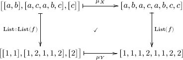 The top right path is concatenating then translating, and the left bottom path is translating then concatenating, and one sees here that they do the same thing. Here is how the preceding example fits with the terminology of Definition 5.3.1.2. The categories 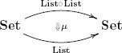 Definition 5.3.1.2. Let 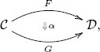 is defined as follows. One announces some constituents (A. components) and shows that they conform to a law (1. naturality squares). Specifically, one announces A. for each object One must then show that the following natural transformation law holds: 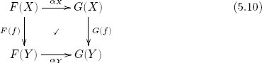 The set of natural transformations F → G is denoted Nat(F, G). Remark 5.3.1.3. If we have two functors Example 5.3.1.4. Consider the following categories 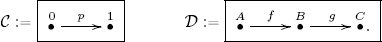 Consider the functors F, G : [1] → [2], where F(0) = A, F(1) = B, G(0) = A, and G(1) = C. It turns out that there is only one possible natural transformation F → G; we call it α and explore its naturality square. The components of α : F → G are shown in green. These components are α0 = idA : F(0) → G(0) and α1 = g : F(1) → G(1). The naturality square for p : 0 → 1 is shown twice below, once with notation following that in (5.10) and once in local notation: 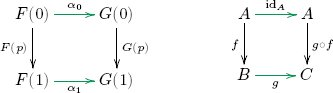 It is clear that this diagram commutes, so the components α0 and α1 satisfy the law of Definition 5.3.1.2, making α a natural transformation. Proposition 5.3.1.5. Let 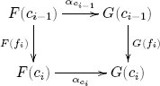 Then the naturality square for the composite p ≔ fn ○ ⋯ ○ f2 ○ f1 : c0 → cn 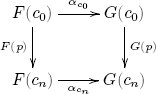 also commutes. In particular, the naturality square commutes for every identity morphism idc. Proof. When n = 0, we have a path of length 0 starting at each 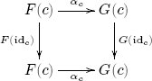 commutes. But this is clear because functors preserve identities. The rest of the proof follows by induction on n. Suppose q = fn−1 ○ ⋯ ○ f2 ○ f1 : c0 → cn−1 and p = fn ○ q and that the naturality squares for q and for fn commute; we need only show that the naturality square for p commutes. That is, we assume the two small squares commute; it follows that the large rectangle does too, completing the proof. 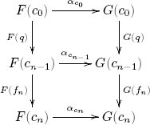 Example 5.3.1.6. Let These are just functors so far. What are the natural transformations say, α : (0, 0) → (0, 1)? To specify a natural transformation, we must specify a component for each object in There are three morphisms in 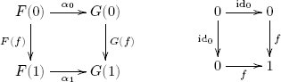 This commutes, so α is indeed a natural transformation. Exercise 5.3.1.7. With notation as in Example 5.3.1.6, we have three functors a. when F = (0, 0) and G = (1, 1)? b. when F = (0, 0) and G = (0, 0)? c. when F = (0, 1) and G = (0, 0)? d. when F = (0, 1) and G = (1, 1)? Exercise 5.3.1.8. Let 1 denote the discrete category on one object, Ob(1) = {1}, and let Exercise 5.3.1.9. Let [1] denote the free arrow category, 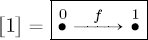 as in Exercise 5.1.2.34, and let a. What are all the functors [1] → b. For any two functors F, G : [1] → Exercise 5.3.1.10. Consider the functor List: Set → Set sending a set X to the set List(X) of lists with entries in X. There is a natural transformation List○List → List given by concatenation. a. If someone said, “Singleton lists give a natural transformation σ from idSet to List,” what might she mean? That is, for a set X, what component σX might she be suggesting? b. Do these components satisfy the necessary naturality squares for functions f : X → Y? In other words, given your interpretation of what the person is saying, is she correct? Exercise 5.3.1.11. Let a. For any other functor b. Let Application 5.3.1.12. Figure 4.2 showed a finite state machine on alphabet Σ = {a, b}, and Example 4.1.3.1 shows its associated action table. Imagine this was your model for understanding the behavior of some system when acted on by commands a and b. Suppose a colleague tells you he has a more refined model that fits with the same data. His model has six states rather than three, but it is compatible. What might that mean? Both the original state machine, X, the proposed model, Y, and their associated action tables are shown in Figure 5.1 (see page 247). How are these models compatible? In the table for Y, if one removes the distinction between states 1A, 1B, 1C and between states 2A and 2B, then one returns with the table for X. The table for Y is more specific, but it is fully compatible with the table for X. The sense in which it is compatible is precisely the sense defined by there being a natural transformation. Recall that 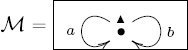 Recall also that a state machine on The states of Y have been named so as to make the function α▲ particularly easy to guess.12 We need to check that two squares commute: 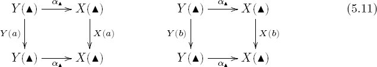 This can only be checked by going through and making sure that certain things match, as specified by (5.11); this is spelled out in detail. The columns that should match are those whose entries are written in blue. These correspond to the left bottom composites being matched with the top right composites in the naturality squares of (5.11). 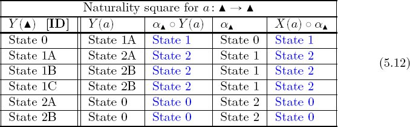 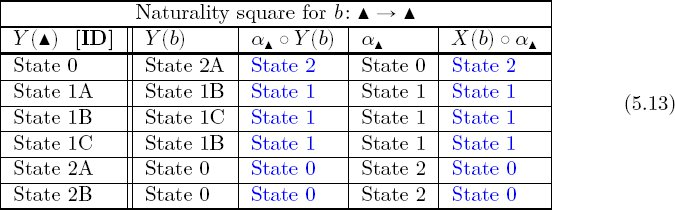 To recap, scientists may often have the idea that two models Y and X are compatible, and such notions of compatibility may be broadly agreed upon. However, these notions can at the same time be challenging to explain to an outsider, e.g., a regulatory body or auditor, especially in more complex situations. On the other hand, it is unambiguous to simply claim “there is a natural transformation from Y to X.” If, in a given domain, the notion of natural transformation captures the essence of compatible models, it may bring clarity. Exercise 5.3.1.13. Let a. What might he mean? b. What components is he suggesting? c. Are the components natural? Solution 5.3.1.13. a. He is certainly telling us about a natural transformation α : F → F, and he seems to be telling us that it will somehow act like an identity. b. To give a questionably natural transformation, we need to provide, for every c. For α to be natural we need to check that the following square commutes for any f : c → c′ in 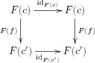 It clearly does commute, so α is natural. This natural transformation α is usually denoted idF : F → F. Example 5.3.1.14. Let [1] ∈ Ob(Cat) be the free arrow category described in Exercise 5.1.2.34, and let Thus, choosing two functors A natural transformation α : F → G consists of two components, i.e., morphisms 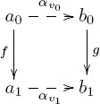 The condition for α to be a natural transformation is that this square commutes. In other words, a functor Example 5.3.1.15. Recall that to any graph G we can associate the paths-graph Paths(G) (see Example 5.1.2.25). This is a functor Paths: Grph → Grph. There is also an identity functor idGrph : Grph → Grph. A natural transformation η : idGrph → Paths would consist of a graph homomorphism ηG : idGrph(G) → Paths(G) for every graph G. But idGrph(G) = G by definition, so we need ηG : G → Paths(G). Recall that Paths(G) has the same vertices as G, and every arrow in G counts as a path (of length 1). So there is an obvious graph homomorphism from G to Paths(G). It is not hard to see that the necessary naturality squares commute. Example 5.3.1.16. For any graph G we can associate the paths-graph Paths(G), and can do that twice to yield a new graph Paths(Paths(G)). Let’s think through what a path of paths in G is. It is a head-to-tail sequence of arrows in Paths(G), meaning a head-to-tail sequence of paths in G. These composable sequences of paths (or “paths of paths”) are the individual arrows in Paths(Paths(G)). The vertices in Paths(G) and Paths(Paths(G)) are the same as those in G, and all source and target functions are as expected. Clearly, given such a sequence of paths in G, we could compose them to one big path in G with the same endpoints. In other words, for every G ∈ Ob(Grph), there is graph homomorphism µG : Paths(Paths(G)) → Paths(G) that is called concatenation. In fact, this concatenation extends to a natural transformation between functors Grph → Grph. Example 5.3.1.15 compared a graph to its paths-graph using a natural transformation idGrph → Paths; here we are making a similar kind of comparison. Remark 5.3.1.17. Example 5.3.1.15 showed that there is a natural transformation comparing each graph to its paths-graph. There is a formal sense in which a category is nothing more than a kind of reverse mapping. That is, to specify a category is the same thing as to specify a graph G together with a graph homomorphism Paths(G) → G. The formalities involve monads (see Section 7.3). Exercise 5.3.1.18. Let X and Y be sets, and let h : X → Y. There is a functor CX : Grph → Set that sends every graph to the set X and sends every morphism of graphs to the identity morphism idX : X → X. This functor is called the constant functor at X. Similarly, there is a constant functor CY : Grph → Set. a. Use h to construct the components of a questionably natural transformation α : CX → CY. b. Is α natural? Exercise 5.3.1.19. For any graph (V, A, src, tgt) we can extract the set of arrows or the set of vertices. Since each morphism of graphs includes a function between their arrow sets and a function between their vertex sets, we actually have functors Ar : Grph → Set and Ve : Grph → Set. a. If someone said, “Taking source vertices gives a natural transformation from Ar to Ve,” what questionably natural transformation might she be referring to? b. Is she correct, i.e., is it natural? c. If a different person, say, from a totally different city and in a totally different frame of mind, were to hear this and say, “Taking target vertices also gives a natural transformation from Ar to Ve,” would they also be correct? Example 5.3.1.20 (Graph homomorphisms are natural transformations). As discussed (see diagram (5.8)), there is a category GrIn for which a functor G : GrIn → Set is the same thing as a graph. Namely, we have 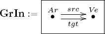 A natural transformation of two such functors α : G → G′ involves two components, αAr : G(Ar) → G′(Ar) and αVe : G(Ve) → G′(Ve), and two naturality squares, one for src and one for tgt. This is precisely the same thing as a graph homomorphism, as defined in Definition 4.3.3.1. This section discusses two types of compositions for natural transformations. The terms vertical and horizontal are used to describe them; these terms come from the following pictures: We use the symbol ○ to denote vertical composition, so we have β ○ α : F → H in the left-hand diagram. We use the symbol ◇ for horizontal composition, so we have γ2 ◇ γ1 : F2 ○ F1 → G2 ○ G1 in the right-hand diagram. Of course, the actual arrangement of things on a page of text does not correlate with verticality or horizontality—these are just names. We define them more carefully in the following. The following proposition proves that functors and natural transformations (using vertical composition) form a category. Proposition 5.3.2.2. Let Under this setup, there are indeed identity natural transformations and a composition formula for natural transformations, so we have defined a questionable category Proof. Exercise 5.3.1.13 showed that for any functor Given a natural transformation α : F → G and a natural transformation β : G → H, we need a composite β ○ α. We propose the transformation γ : F → H having components βc ○ αc for every One proves the associativity and identity laws in Notation 5.3.2.3. We sometimes denote the category Example 5.3.2.4. Recall from Exercise 5.1.2.41 that there is a functor Ob: Cat → Set sending a category to its set of objects. And recall from Example 5.1.2.38 that there is a functor Let idCat : Cat → Cat be the identity functor. There is a natural transformation i : P → idCat. For any category Exercise 5.3.2.5. Let 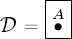 be the category with Notation 5.3.2.6. Recall from Notation 2.1.2.9 that if X is a set, we can represent an element x ∈ X as a function Exercise 5.3.2.7. Let n ∈ ℕ, and let n be the set with n elements, considered as a discrete category.13 In other words, we write n to mean what should really be called Disc(n). Describe the category Fun(3, 2). Example 5.3.2.8. Let 1 denote the discrete category with one object (also known as the trivial monoid). For any category A morphism α : F → F in Exercise 5.3.2.9. Let 0 represent the discrete category on 0 objects; it has no objects and no morphisms. Let a. What is b. What is Exercise 5.3.2.10. Let [1] denote the free arrow category as in Exercise 5.1.2.34, and let GrIn be the graph-indexing category (see (5.8). Draw the underlying graph of the category Fun([1], GrIn). Let Proposition 5.3.2.12 (Natural isomorphism). Let Proof. First, suppose that α is an isomorphism with inverse β : G → F, and let βc : G(c) → F (c) denote its c component. We know that α ○ β = idG and β ○ α = idF. Using the definitions of composition and identity given in Proposition 5.3.2.2, this means that for every Second, suppose that each αc is an isomorphism with inverse βc : G(c) → F(c). We need to see that these components assemble into a natural transformation, i.e., for every morphism h : c → c′ in commutes. We know that the left-hand square commutes because α is a natural transformation; each square is labeled with a ? or a ✓ accordingly. In the following diagram we want to show that the left-hand square commutes. We know that the middle square commutes. 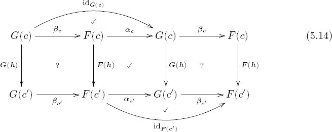 To complete the proof we need only show that F(h) ○ βc = βc′ ○ G(h). This can be shown by a “diagram chase.” We go through it symbolically, for demonstration. The following three equalities come from the three check marks in the (5.14). Exercise 5.3.2.13. Recall from Application 5.3.1.12 that a finite state machine on alphabet Σ can be understood as a functor Example 5.3.2.15 (Whiskering). Suppose that Recall Application 5.3.1.12 and Figure 5.1, which is reproduced here. Let 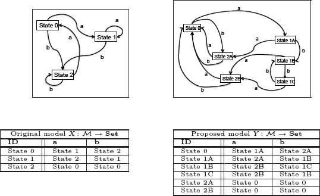 We can compose X and Y with F as in the diagram below 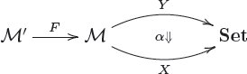 to get functors Y ○ F and X ○ F, both of type The map α is what sent both State 1A and State 1B in Y to State 1 in X, and so on. We can see that the same α works now: the p columns of the tables respect that mapping; that is, they act like [b, a, a] or equivalently [n, m, m]. This is called whiskering. We used α : Y → X to get a natural transformation Y ○ F → X ○ F . It is a kind of horizontal composition of natural transformation. Definition 5.3.2.16 (Whiskering). Let Then the prewhiskering of α by F, denoted α ◇ F : G1 ○ F → G2 ○ F (resp. the post-whiskering of α by H, denoted H ◇ α : H ○ G1 → H ○ G2), is defined as follows. For each Exercise 5.3.2.17. Suppose given functors Solution 5.3.2.17. By Definition 5.3.2.16, for each object Definition 5.3.2.18 (Horizontal composition of natural transformations). Let By pre- and postwhiskering in one order or the other we get the following diagram: It is straightforward to show that this diagram commutes, so we can take the composition to be the definition of the horizontal composition: Remark 5.3.2.19. Whiskering a natural transformation α with a functor F is the same thing as horizontally composing α with the identity natural transformation idF . This is true for both pre- and postwhiskering. For example, in the notation of Definition 5.3.2.16, we have Theorem 5.3.2.20 (Interchange). Given a setup of categories, functors, and natural transformations as shown, we have Proof. One need only observe that each square commutes in the following diagram, so taking either outer path to get (β2 ○ β1) ◇ (α2 ○ α1) yields the same morphism as taking the diagonal path, (β2 ◇ α2) ○ (β1 ◇ α1): Exercise 5.3.2.21. Suppose given categories, functors, and natural transformations as shown: such that α : F → F′ and β : G → G′ are natural isomorphisms. Show that β◇α : G○F → G′ ○ F′ is a natural isomorphism. Solution 5.3.2.21. Let α′ : F′ → α and β′ : G′ → G be the inverses of α and β respectively. To check that β ◇ α is an isomorphism, we use Theorem 5.3.2.20 (and Exercise 5.3.2.17) to see that and similarly for the other order, (β′ ◇ α′) ○ (β ◇ α) = idG○f. Section 5.2.2 showed that schemas are presentations of categories, and Section 5.4 shows that in fact the category of schemas is equivalent to the category of categories. This section therefore takes license to blur the distinction between schemas and categories. If Definition 5.3.3.1. Let Remark 5.3.3.2. One might object to Definition 5.3.3.1 on the grounds that database instances should not be infinite. This is a reasonable perspective, and the definition can be modified easily to accommodate it. The subcategory Fin (see Example 5.1.1.4) of finite sets can be substituted for Set in Definition 5.3.3.1. One could define the category of finite instances on Natural transformations should serve as some kind of morphism between instances on the same schema. How are we to interpret a natural transformation α : I → J between database instances A first clue comes from Application 5.3.1.12. There we considered the case of a monoid Example 5.3.3.3. Consider the terminal schema, . An instance is a functor 1 → Set, which represents a set (see Notation 5.3.2.6). A natural transformation α : I → J is a function from set I to set J. In the standard table view, we might have I and J as shown here: There are 343 natural transformations I → J. Perhaps some of them make more sense than others, e.g., we could hope that the numbers in I corresponded to the numbers after the hyphen in J or perhaps to what seems to be the date in January. Knowing something like this would reduce this to only a few options out of 343 possible mappings. But it could be that the rows in J correspond to batches, and all three grapes in I are part of the first batch on Jan-01. The point is that the notion of natural transformation is a mathematical one; it has nothing to do with the kinds of associations we might find natural, unless we have found a categorical encoding for this intuition. Exercise 5.3.3.4. Recall the notion of set-indexed sets from Definition 3.4.6.11. Let A be a set, and devise a schema Solution 5.3.3.4. Definition 3.4.6.11 actually gives us the objects and morphisms of a category, say, the category of A-indexed sets, in that it tells us that the objects and morphisms are merely the A-indexed sets and the A-indexed functions. Let us denote the category of A-indexed sets A–Set; this exercise is asking for a category And indeed there is. Let For a general schema (or category) Example 5.3.3.5. We saw in Section 5.2.1.21 that graphs can be regarded as functors A database instance To discuss natural transformations, we need two instances. Here is another, To give a natural transformation α : I → J, we give two components: one for Arrow and one for Vertex. We need to say where each vertex in I goes in J, and we need to say where each arrow in I goes in J. The naturality squares insist that if we specify that g ↦ j, for example, then we had better specify that w ↦ r and that x ↦ s. What a computer is very good at, but a human is fairly slow at, is checking that a given pair of components (arrows and vertices) really is natural. There are 8000 ways to devise component functions αArrow and αVertex, but precisely six natural transformations, i.e., six graph homomorphisms, I → J; the other 7,994 are haphazard flingings of arrows to arrows and vertices to vertices without any regard to sources and targets. The six are briefly described now. The reader should look at the graph diagrams of I and J while following along. Every vertex in I has to be sent to some vertex in J, so we think about where to send v and proceed from there. Humans may follow the diagrams better than the tables, whereas computers probably understand the tables better. Exercise 5.3.3.6. If Exercise 5.3.3.7. Let GrIn be the graph-indexing category, and let YA : GrIn → Set denote the following instance: Let I : GrIn → Set be as in Example 5.3.3.5. a. How many natural transformations are there YA → I? b. With J as previously, how many natural transformations are there YA → J? c. Do you have any conjecture about the way natural transformations YA → X behave for arbitrary graphs Solution 5.3.3.7. It is useful to see YA as a graph so we can visualize the graph morphisms YA → I or YA → J. a. A graph morphism YA → I amounts to an arrow in graph I. In other words, there is a natural isomorphism How does this works? What might g mean as a natural transformation YA → I? To give a questionably natural transformation α : YA → I, we need to give a component αAr : {a} → {f, g, h} and a component αVe : {v0, v1} → {v, w, x}. Since we have g in mind, let’s put αAr(a) ≔ g. There are 32 choices for αVe, but only one is natural because the two morphisms src, tgt : Ar → Ve demand two naturality equations, In other words, once we choose αAr(a) to be g, the rest is forced on us. In the same way, we could have chosen αAr(a) to be any of f, g, h, which is why we said Nat(YA, I) ≅ {f, g, h}. b. There are four, Nat(YA, J) ≅ {i, j, k, ℓ}. In terms of databases, this notion of instance morphism α : I → J on a schema We have a category Cat of categories, and in every category there is a notion of isomorphism between objects: one morphism each way, such that each round-trip composition is the identity. An isomorphism in Cat, therefore, takes place between two categories, say, It turns out that categories are often similar enough to be considered equivalent without being isomorphic. For this reason, the notion of isomorphism is considered too strong to be useful for categories, akin to saying that two material samples are the same if there is an atom by atom matching, or that two words are the same if they are written in the same font and size, by the same person, in the same state of mind. As reasonable as isomorphism is as a notion in most categories, it fails to be the right notion about categories. The reason is that in categories there are objects and morphisms, whereas when we talk about categories, we have categories and functors plus natural transformations. Natural transformations serve as mappings between mappings, and this is not part of the structure of an ordinary category. In cases where a category The purpose now is to explain this “good notion” of sameness for categories, namely, equivalence of categories, which appropriately takes natural transformations into account. Instead of functors going both ways with round-trips equal to identity, which is required in order to be an isomorphism of categories, equivalence of categories demands functors going both ways with roundtrips naturally isomorphic to identity. Definition 5.3.4.1 (Equivalence of categories). Let Suppose we are given functors To be an equivalence, the same has to hold for the other round-trip, Exercise 5.3.4.2. Let a. Is it an equivalence of categories? b. If not, why? If so, what are the components of α and α′ (with notation as in Definition 5.3.4.1)? Solution 5.3.4.2. a. Yes. b. If a functor Example 5.3.4.3. Let S be a set, and let S × S ⊆ S × S be the complete relation on S, which is a preorder KS. Recall from Proposition 5.2.1.13 that there is a functor i : PrO → Cat, and the resulting category i(KS) is called the indiscrete category on S; it has objects S and a single morphism between every pair of objects. Here is a diagram of K{1,2,3}: It is easy check that K1, the indiscrete category on one element, is isomorphic to 1, the discrete category on one object, also known as the terminal category (see Exercise 5.1.2.40). The category 1 consists of one object, its identity morphism, and nothing else. Let’s think about the difference between isomorphism and equivalence using KS ∈ Ob(Cat). The only way that KS can be isomorphic to 1 is if S has one element.17 On the other hand, there is an equivalence of categories for every set S ≠ ∅. So for example, K{1,2,3} from (5.15) is equivalent to the terminal category, 1. In fact, there are many such equivalences, one for each element of S. To see this, let S be a nonempty set, and choose an element s0 ∈ S. For every s ∈ S, there is a unique isomorphism Let α = id1, and define Example 5.3.4.4. Consider the category FLin, described in Example 5.1.1.13, of finite nonempty linear orders. For every natural number n ∈ ℕ, let [n] ∈ Ob(FLin) denote the linear order shown in Example 4.4.1.7. Define a category Δ whose objects are given by Ob(Δ) = {[n] | n ∈ ℕ} and with HomΔ([m], [n]) = HomFLin([m], [n]). The difference between FLin and Δ is only that objects in FLin may have odd labels, e.g., whereas objects in Δ all have standard labels, e.g., Clearly, FLin is a much larger category, and yet it feels as if it is pretty much the same as Δ. Actually, they are equivalent, FLin ≃ Δ. We will find functors F and F′ which witness this equivalence. Let F′ : Δ → FLin be the inclusion; and let F : FLin → Δ send every finite nonempty linear order X ∈ Ob(FLin) to the object F(X) ≔ [n] ∈ Δ, where Ob(X) ≅ {0, 1, … , n}. For each such X, there is a unique isomorphism αX : Exercise 5.3.4.5. Recall from Definition 2.1.2.23 that a set X is called finite if there exists a natural number n ∈ ℕ and an isomorphism of sets X → n. Let Fin denote the category whose objects are the finite sets and whose morphisms are the functions. Let For every object X ∈ Ob(Fin), there exists an isomorphism pX : Exercise 5.3.4.6. We say that two categories Example 5.3.4.7. Consider the group ℤ2 ≔ ({0, 1}, 0, +), where 1 + 1 = 0. As a category, ℤ2 has one object ▲ and two morphisms, namely, 0, 1, such that 0 is the identity. Since ℤ2 is a group, every morphism is an isomorphism. Let When we round-trip F′ ○ F : ℤ2 → ℤ2, the image of 1: ▲ → ▲ is F′ ○ F(1) = 0 = id▲. So the naturality square for the morphism 1 looks like this: where it is undecided whether α▲ is to be 0 or 1. Unfortunately, neither choice works (i.e., for neither choice will the diagram commute) because x + 1 ≠ x + 0 in ℤ2. Definition 5.3.4.8 (Full and faithful functors). Let guaranteed by the definition of functor. We say that F is a full functor if HomF(c, c′) is surjective for every Exercise 5.3.4.9. Let 1 and 2 be the discrete categories on one and two objects respectively. There is only one functor F : 2 → 1. a. Is it full? b. Is it faithful? Exercise 5.3.4.10. Let 0 denote the empty category, and let a. For general b. For general c. For general Proposition 5.3.4.11. Let Sketch of proof. Suppose F is an equivalence, so we can find a functor is bijective. Consider the following diagram One can check that Exercise 5.3.4.12. Let ℤ2 be the group (as category) from Example 5.3.4.7. Are there any fully faithful functors ℤ2 → 1? Perhaps it is intuitively clear that schemas are somehow equivalent to categories. In fact, this is a reason that so much attention has been given to databases (and ologs). This section makes the equivalence between schemas and categories precise; it is proved in Section 5.4.2. The basic idea was laid out in Section 5.2.2. Recall from Definition 4.5.2.7 that a schema consists of a pair Unfortunately, one’s first guess may give the wrong idea if we want an equivalence Sch ≃ Cat. Since an object in Sch is a graph with a congruence, one might imagine that a morphism If instead we define morphisms between schemas to be maps that send paths in Recall from Examples 5.1.2.25 and 5.3.1.16 the paths-graph functor Paths: Grph → Grph, the paths of paths functor Paths ○ Paths: Grph → Grph, and the natural transformations for any graph G, The function ηG spells out the fact that every arrow in G counts as a path in G, and the function μG spells out the fact that a head-to-tail sequence of paths (a path of paths) in G can be concatenated to a single path in G. Exercise 5.4.1.1. Let [2] denote the graph a. Find a graph homomorphism f : [2] → Paths( b. The graph [2] has six paths, so Paths([2]) has six arrows. What are the images of these arrows under the graph homomorphism Paths(f): Paths([2]) → Paths(Paths( c. Finally, using μ does to the six arrows in Paths([2]). Before we look at the definition of schema morphism, let’s return to the original question. Given graphs G, G′ (underlying schemas Given a graph homomorphism f : G → Paths(G′), we use (5.16) to form the following composition, denoted simply Pathsf : Paths(G) → Paths(G′): This says that given a function from arrows in G to paths in G′, a path in G becomes a path of paths in G′, which can be concatenated to a path in G′. Definition 5.4.1.2 (Schema morphism). Let G = (V, A, src, tgt) and G′ = (V′, A′, src′, tgt′) be graphs, and let that satisfies the following condition for any paths p and q in G: Two schema morphisms We now define the category of schemas, denoted Sch, to be the category whose objects are schemas as in Definition 4.5.2.7 and whose morphisms are schema morphisms, as in Definition 5.4.1.2. The identity morphism on schema Slogan 5.4.1.3. A schema morphism sends vertices to vertices, arrows to paths, and path equivalences to path equivalences. Example 5.4.1.4. Let [2] be the linear order graph of length 2, at the left, and let We impose on Exercise 5.4.1.5. Consider the schema [2] and the schema a. How many schema morphisms are there b. How many schema morphisms are there Exercise 5.4.1.6. Consider the graph and for any natural number n ∈ ℕ, let a. Is 1 isomorphic to b. Is 1 isomorphic to any (other) Solution 5.4.1.6. a. No. The schema b. Yes, there is an isomorphism of schemas 1 ≅ Exercise 5.4.1.7. Let a. What is the cardinality of the set HomSch( b. What is the cardinality of the set HomSch( This section proves the equivalence of categories, Sch ≃ Cat. We construct the two functors Sch → Cat and Cat → Sch and then prove that these are mutually inverse equivalences (see Theorem 5.4.2.3). Construction 5.4.2.1 (From schema to category). We first define a functor L : Sch → Cat. Let Given a schema morphism A morphism in Construction 5.4.2.2 (From category to schema). We first define a functor R : Cat → Sch. Let and with ≃ defined as the congruence generated by the following path equivalence declarations: for any composable sequence of morphisms f1, f2, …, fn (with dom(fi+1) = cod(fi) for each 1 ⩽ i ⩽ n − 1), we put equating a path of length n with a path of length 1. This defines R on objects of Cat. A functor Theorem 5.4.2.3. The functors are mutually inverse equivalences of categories. Sketch of proof. It is clear that there is a natural isomorphism Before giving an isomorphism There is a natural transformation β : idSch → R ○ L whose __________________ 1In Society of Mind [32]. 2The reason for the notation Hom and the word hom-set is that morphisms are often called homomorphisms, e.g., in group theory. 3Full subcategory will be defined in Definition 6.2.3.1. 5See Exercise 2.1.2.22 if there is any confusion about this. 6The name of this morphism is unimportant. What matters is that 7The topology is given by saying that U ⊆ ℝ is open iff for every x ∈ U, there exists ϵ > 0 such that {y ∈ ℝ | |y − x| < ϵ} ⊆ U}. One says, “U ⊆ ℝ is open if every point in U has an epsilon-neighborhood fully contained in U.” 8The topology on ℝ × ℝ is similar; a subset U ⊆ ℝ × ℝ is open if every point x ∈ U has an epsilon-neighborhood (a disk around x of some positive radius) fully contained in U. 9This example may be somewhat crude, in accordance with the crudeness of my understanding of materials science. 10 Let I × I = {(x, y) ∈ ℝ2 | 0 ≤ x ≤ 1 and 0 ≤ y ≤ 1} denote the square. There are two inclusions i0, i1 : I → S that put the interval inside the square at the left and right sides. Two paths f0, f1 : I → X are homotopic if there exists a continuous map f : I × I → X such that f0 = f ○ i0 and f1 = f ○ i1, 11The discipline called information theory, invented by Claude Shannon, is concerned only with ideal compression schemes. It does not pay attention to the content of the messages—what they mean—as Shannon says specifically in his seminal paper: “Frequently the messages have meaning; that is they refer to or are correlated according to some system with certain physical or conceptual entities. These semantic aspects of communication are irrelevant to the engineering problem.” Thus I think the subject is badly named. It should be called compression theory or redundancy theory. Information is inherently meaningful—that is its purpose—so a theory unconcerned with meaning is not really studying information per se. (The people who decide on speed limits for roads and highways may care about human health, but a study limited to understanding ideal speed limit schemes would not be called “human health theory.”) Information theory is extremely important in a diverse array of fields, including computer science [28], neuroscience [5], [27], and physics [16]. I am not trying to denigrate the field; I only disagree with its name. 12The function α▲ : Y (▲) → X(▲) makes the following assignments: State 0 ↦ State 0, State 1A ↦ State 1, State 1B ↦ State 1, State 1C ↦ State 1, State 2A ↦ State 2, State 2B ↦ State 2. 13When we have a functor, such as Disc : Set → Cat, we sometimes say, “Let S be a set, considered as a category.” This means that we want to take ideas and methods available in Cat and use them on the set S. Having the functor Disc, we use it to move S into Cat, as Disc(S) ∈ Ob(Cat), upon which we can use the intended methods. However, Disc(S) is bulky, e.g., Fun(Disc(3), Disc(2)) is harder to read than Fun(3, 2). So we abuse notation and write S instead of Disc(S), and talk about S as though it were still a set, e.g., discussing its elements rather than its objects. This kind of conceptual abbreviation is standard practice in mathematical discussion because it eases the mental burden, but when one says “Let S be an X considered as a Y,” the other may always ask, “How are you considering X’s to be Y’s?” and expect a functor. 14The p column comes from applying b, then a, then a, as specified by F. 15More precisely, given a functor between schemas 16The notation ≃ has already been used for equivalences of paths in a schema. I do not mean to equate these ideas; I am just reusing the symbol. Hopefully, no confusion will arise. 17One way to see this is that by Exercise 5.1.2.41, we have a functor Ob: Cat → Set, and we know by Exercise 5.1.2.27 that functors preserve isomorphisms, so an isomorphism between categories must restrict to an isomorphism between their sets of objects. The only sets that are isomorphic to 1 have one element. 18The phrase “these fit together into” is shorthand for, and can be replaced by, “the naturality squares commute for these components, so together they constitute.” 19By Definition 4.3.3.1, a graph homomorphism F : G → Paths(G′) will consist of a vertex part F0 : V → V′ and an arrows part F1 : E → Path(G′). See also Definition 4.3.2.1.Chapter 5
Basic Category Theory
5.1 Categories and functors
5.1.1 Categories
5.1.1.18 Isomorphisms
5.1.1.26 Another viewpoint on categories
5.1.2 Functors
5.1.2.30 The category of categories
5.2 Common categories and functors from pure math
5.2.1 Monoids, groups, preorders, and graphs
5.2.1.1 Monoids as categories
 and
and  for all s ∈ S. How might we relate the notion of monoid actions to the notion of functors? Since monoids act on sets, one idea is to try asking what a functor
for all s ∈ S. How might we relate the notion of monoid actions to the notion of functors? Since monoids act on sets, one idea is to try asking what a functor 5.2.1.4 Groups as categories
5.2.1.7 A monoid and a group stationed at each object in any category
5.2.1.12 Preorders as categories
5.2.1.21 Graphs as functors

5.2.2 Database schemas present categories
5.2.2.6 Instances on a schema
5.2.3 Spaces
5.2.3.7 Groupoids
5.2.4 Logic, set theory, and computer science
5.2.4.1 The category of propositions
5.2.4.5 A categorical characterization of Set
5.2.4.6 Categories in computer science
5.2.5 Categories applied in science
5.3 Natural transformations
5.3.1 Definition and examples

5.3.2 Vertical and horizontal composition

5.3.2.1 Vertical composition of natural transformations
5.3.2.11 Natural isomorphisms

5.3.2.14 Horizontal composition of natural transformations
5.3.3 The category of instances on a database schema

5.3.4 Equivalence of categories
5.4 Categories and schemas are equivalent, Cat ≃ Sch
5.4.1 The category Sch of schemas
5.4.2 Proving the equivalence